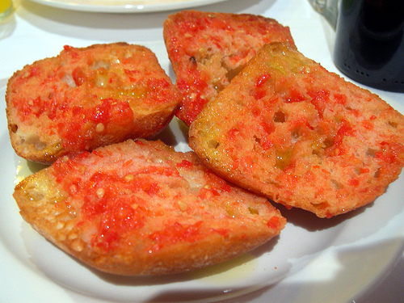

La preparación es super sencilla, simplemente con rebanadas
preferiblemente de pan de payés (aunque puede prepararse con otras),
luego se cogerá el diente de ajo, se pelará y se frotará sobre la
misma miga de pan. Después se cortará una rodaja de tomate y se
frotará en la misma miga de pan en la que se ha frotado el ajo
(si el pan esta un poco tostado mejor que mejor) y por último se
echará un pizquita de aceite por encima para darle un último gusto.